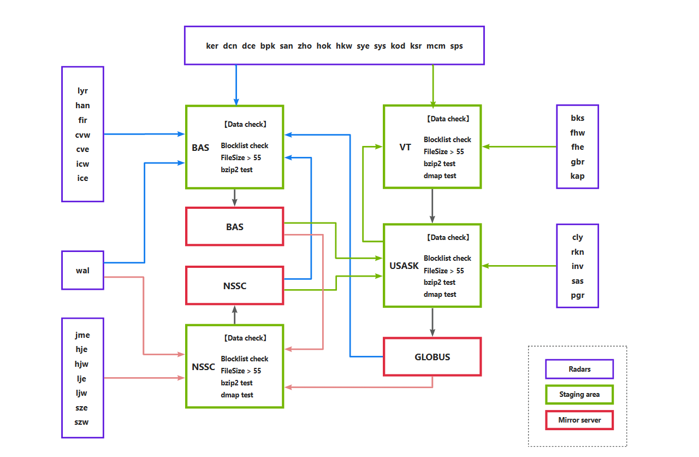

Data Volume : 667GB File Count : 43452
Update Date : 2025-11-23 16:45:23
Data Volume : 452GB File Count : 56785
Update Date : 2027-06-30 14:10:49
Data Volume : 47TB File Count : 45643
Update Date : 2026-07-24 09:30:09
SuperDARN global radar data acquisition, validation & distribution pipeline

Loading calendar...
Yearly Total Data Volume Trend
Historical RAWACF data volume by year with linear-regression forecast for the next year
Total Data Volume Trend
Cumulative RAWACF data volume over years with forecast for the next year
Total File Volume & Quantity By Radar
Total data volume (GB) and file count ranked by radar station
Continuous RAWACF Data Statistics By Radar
Continuous RAWACF release coverage per radar station on the timeline
Loading membership data...
Loading charter...